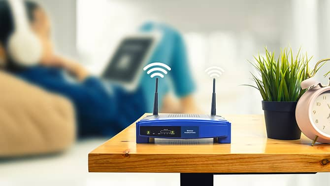
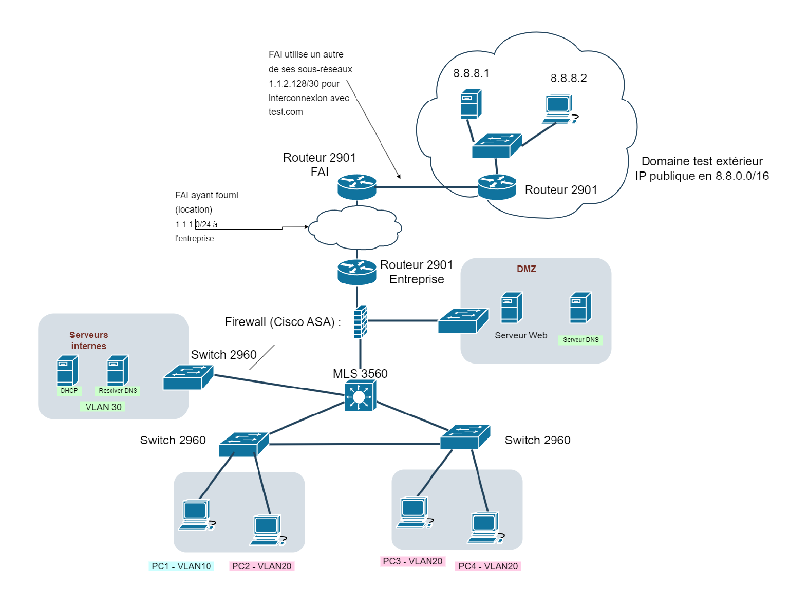
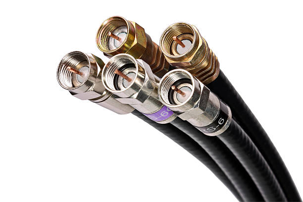
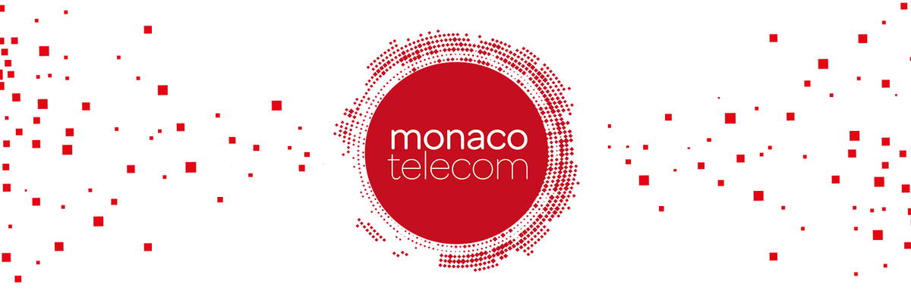
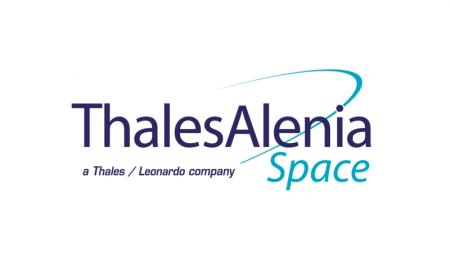
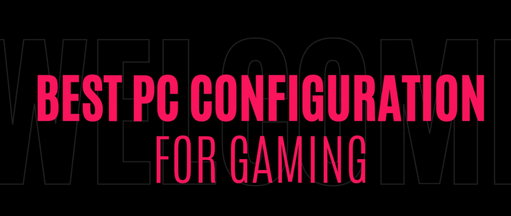
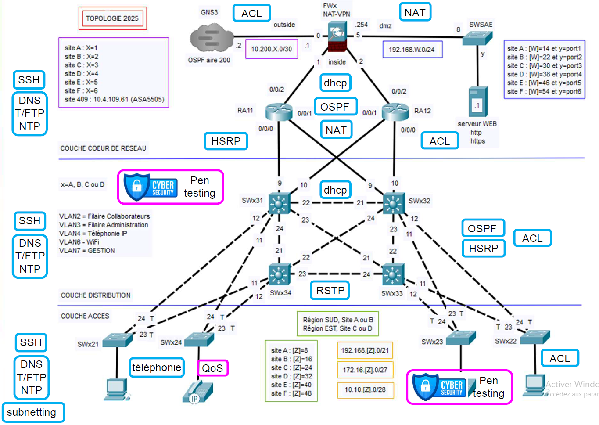
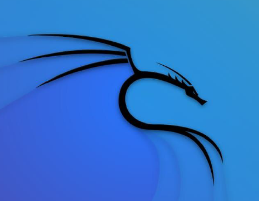

Infrastructure & Réseaux

Mon Réseau Domestique
Analyse technique approfondie de l'architecture et du flux de données de mon installation personnelle.

Architecture PME
Conception et simulation complète d'une infrastructure réseau sécurisée pour une petite entreprise via Packet Tracer.

Expertise Coaxial
Étude comparative des performances et des propriétés physiques des transmissions par câble coaxial.
Communication & Développement

Immersion Monaco Telecom
Interview d'un spécialiste des réseaux en milieu professionnel.

Partenariat Thalès
Développement d'une interface web interactive pour le pilotage de bancs de tests avioniques.

Vidéo
Création d'un guide vidéo en anglais détaillant l'assemblage et l'optimisation d'un PC Gaming.
Cybersécurité

Infrastructure réseau sécurisée
Conception d'une architecture robuste intégrant la mise en place de tunnels VPN, la configuration de pare-feu Cisco ASA et l'optimisation des flux via QoS.

Test d'intrusion
Réalisation d’un Pentest sur une infrastructure Docker : exploitation de vulnérabilités, pivot réseau via tunnel SSH et rédaction d'un rapport de remédiation.
Application communicante
Développement d'une application pour détecter les vulnérabilitées d'un réseau.